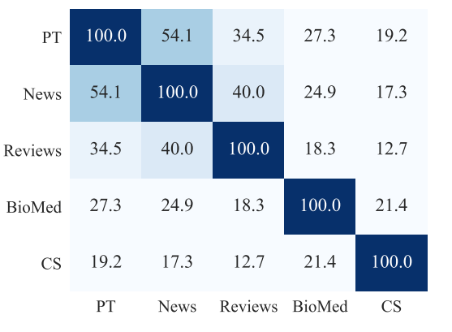
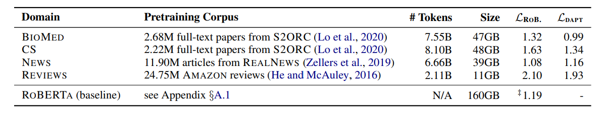
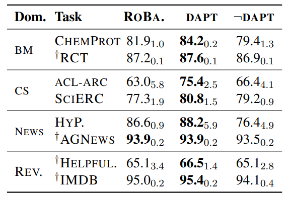
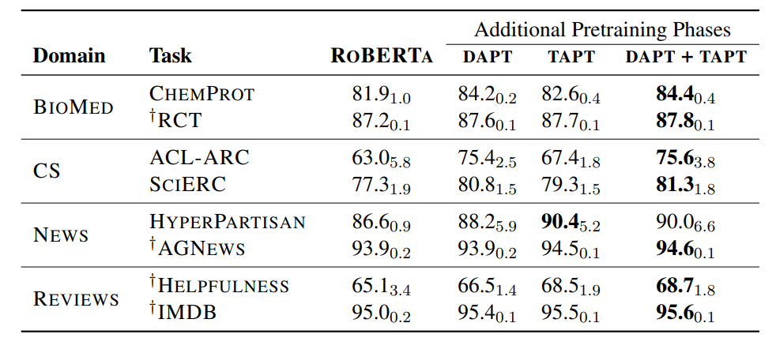
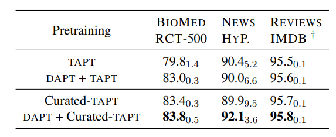

如今很多NLP任务都会在Bert等预训练模型的基础上进行fine-tuning，可能很多人没有意识到在任务领域上进行新的预训练会进一步提高模型效果，下面这篇论文《Don’t Stop Pretraining: Adapt Language Models to Domains and Tasks》就从多个实践角度证明了这种方法的可行性。
太长不看之结论总结版：
在任务相关的领域数据集上继续预训练（DAPT）可以提高模型效果。
在具体下游任务数据集上继续预训练（TAPT）也是有效果的。
- 在更多的、任务相关的无标注数据继续预训练（Curated-TAPT），效果也会提升。
- 没有任务相关的无标注数据，可以采取一种一些简单的数据选择策略生成数据集继续预训练，模型效果也会提升。
并且当任务目标领域与预训练模型的原始训练语料越不相关，DAPT和TAPT对模型效果提升越明显。但是使用与任务目标领域无关的数据进一步预训练模型时，会损坏模型效果。
Never stop pretraining
一些工作已经证明了预训练模型在下游任务相关的数据集上进一步预训练可以提高模型效果，但是不够全面也不够系统，而今天的这篇文章从多个领域和多个下游任务上用实践证明了继续预训练的可行性。
并且论文给出了一些标准，揭示了在什么样的数据上预训练会有更明显的提升。
领域自适应预训练（DAPT）
论文选取了4个领域语料库，分别为生物医学（BioMed）领域、计算机科学（CS）领域、新闻（NEWs）领域、评论（Reviews）领域。使用的预训练模型为RoBERTa。

上图为领域语料库（PT代表RoBERTa的预训练语料）的相关性，相关性计算方式为各领域出现最频繁的10K个单词的重合程度。
可以看出RoBERTa模型训练预料库比较接近News领域，与CS领域相关性最低。

上图第5,6列表示经过DAPT前后，模型在不同数据集上的mask LM损失，损失越小表示模型对于数据集的拟合能力越强。其中最后一行表示从RoBERTa模型预训练语料相似的预料中采样出来。
第5列表示DAPT前的mask LM损失，可以看出NEWS领域的mask LM损失比较接近RoBERTa模型训练预料库，这表明2者数据集看比较相似，这和第一张图表现一致。奇怪的是从第一张图看出Reviews数据集和PT是第二相似，但是RoBERTa模型在这一数据集上的mask LM损失却是最大的，比较反直觉。
在经过DAPT之后，除了NEWS领域，其他三个领域的mask LM损失都有比较明显的下降，即说明与RoBERTa的训练数据集越不相似，领域自适应预训练的受益程度越高。

上图表示4个领域的8个任务，经过DAPT之后模型效果，第2列表示任务类型，其中前面带标志的表示该任务数据集较大。第4列表示使用领域数据进行DAPT，第五列表示使用不相关领域数据进行DAPT，用以证明DAPT之后模型效果提升是因为使用任务相关领域数据预训练，而不仅仅是因为使用额外数据预训练。
从上图可以看出，几乎所有的任务经过DAPT之后模型效果都会有提升，尤其是数据量较小的情况下，提升更为明显。而是用非相关领域数据进行DAPT基本不会有提升，甚至于反而会削弱模型效果。
任务自适应预训练（TAPT）
领域自适应预训练意思是直接使用任务相关的无标注语料继续进行预训练，然后再对特定任务进行finetune。任务数据集可以看作相关领域中的一个子集，相比于领域数据，它的数量更小，但是与任务更加相关，因此在这样的数据上进一步预训练的成本更小。

上图为不同领域不同任务在DAPT和TAPT之后的模型效果，注意这里的DAPT+TAPT指的是在DAPT之后再进行TAPT，而不是数据集拼在一起一次性预训练。
基本上，DAPT+TAPT的预训练效果最佳。
上述对比表明，任务自适应预训练（TAPT）是一种低成本但有效的提升方法。但TAPT直接将标注数据当作无标注数据进行预训练，毕竟数据量还是较小的。如果可以进一步利用任务相关的非标注数据集，则可以进一步提升TAPT的效果，论文中称之为Curated-TAPT，即对人工构造的、可用的、任务相关的未标注数据进行任务自适应预训练。
举个例子，有一批200份的合同，想要训练模型抽取合同中关键信息，对这200份合同进行标注，获得了10K的标注好的序列作为训练和测试集。如果我们只使用这标注好的10K条数据进行预训练，那么就是TAPT。此时如果我们继续搜集合同到1000份，不进行标注，而是把所有合同都进行预训练，则称为Curated-TAPT。

上图比较了TAPT和Curated-TAPT的效果差异，可以看出DAPT+Curated-TAPT的效果最佳。并且这样的生成预训练数据集的成本非常低，通常是不需要额外标注。因此在实际的任务中，我们最好是尽可能搜集数据，即使没有资源标注，也可以作为进一步预训练的数据。
论文还给出了一个自动数据选择方法，不过看起来效果不不太好，这里就不介绍了，感兴趣可以看论文原文。
实践
在实际任务中，尤其是中文任务，有一些实践上的小trick：
怎么样进一步预训练模型？
以Bert模型为例，Bert模型分为2个过程Masked LM任务即预测被mask掉的字符和NSP任务，即预测下一个句子。
在进一步预训练时，只需要训练Masked LM任务即可。对于中文数据，在进行mask的时候可以直接mask一个完整词语而不是单个字。
具体预训练方法在Transformer中已经有现成的，可以直接使用，详情参考这个Github仓库。
Transformer如果没法满足个性化预训练需求的，可以参考这一篇知乎文章。
需要多少数据进行进一步预训练才会有提升？
鉴于论文中提的Curated-TAPT方法，我们应该尽可能搜集任务相关无标注数据作为预训练预料。
考虑到Bert的Masked LM任务中只有15%的字符或者词汇被mask，所以用于预训练的语料要尽可能大一些，个人实践至少要有1W条以上的序列用于预训练，换算成Token的话在15W左右。
相比于Bert模型10亿级Token作为训练集，10万的Token做进一步预训练就可以继续提升模型效果，成本确实是非常低了。